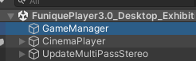
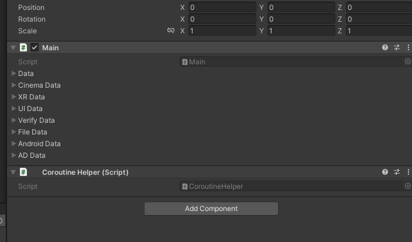

Funique 客戶端元件
所有客戶端會使用到的模組
| ID | Name | Docuemnt |
|---|---|---|
| 1. | 劇院 | 快速開始 |
| 2. | 遊戲客戶端 | 快速開始 |
| 3. | 監控 | 快速開始 |
| 4. | 網路 | 快速開始 |
| 5. | 偏好設定 | 快速開始 |
| 6. | 使用者介面 | 快速開始 |
| 7. | 認證 | 快速開始 |
| 8. | 媒體庫 | 快速開始 |
| 9. | 廣告 | 快速開始 |
基本開始
開啟任何 Demo 場景並且在 Hierarchy 上尋找 GameManager (遊戲管理)
Note
Demo 場景的位置在於 Assets/Scripts/Samples/Demo/Scenes
繼承框架的架構, Demo 整合的物件都會在 Assets/Scripts/Samples/Demo 底下

Note
找到 Main 元件, 這個為 FMF 框架的主管理元件
這個是整個客戶端初始化相關的配置資料集, 透過修改配置來影響之後的執行行為
所有的東西, Demo 場景應該已經設置完畢, 除非有特殊需求, 否則並不用動到場景物件就可以使用
